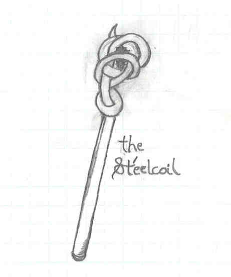

Beer-sheeba spoke up from across the room, "Didn't your mama tell you not to stand on your bed?" The sudden words broke Tilder's trance and caused his face to slip from his palms and his chin to impact the sill. ("Ooch!")
The cleric straightened her robes and snickered. She'd thought long about Tilder's last words before he had drifted off to sleep the night before. When daylight had creeped into the guarded town on the border of the Black Forest, Amber had come to check in on Beer-sheeba and her charge. The women had exchanged stories; Amber had listened with interest to Beer-sheba's night watch report, and the elf had related the details of the previous night's encounter with the former town guard.
"You know, Tilder, now that you're awake, Amber and Gnash would like to talk with you."
The thief turned and looked disappointed. "But Miss, shall you not participate in my interrogation?"
Beer-sheeba yawned, and shook her head. "No, I'm afraid you'll have to meet with them alone. I spent the night watching you sleep, and now it's my turn to rest. And it won't be an interrogation." She turned to leave, but paused at the door. "Good luck to you, Tilder."
"Thanks," Tilder offered with a wink. Beer-sheeba let herself out, and Tilder followed her into the hall. There he found a dwarf, who looked significantly less inebriated but amazingly more friendly in the light of day that streamed through the sky lights. In contrast to Tilder's memory of the full-battle armor and weapon-toting battle dwarf, this morning Tilder found the dwarf not very menacing. At least, he didn't think that striped pajamas were very menacing.
"Good morning, shorty!" Gnash clapped the halfling on the back, nearly knocking him aside. [Dex check, Tilder: 9. Yea!] Tilder's short stature and sure footing prevented him from falling. "You sure know how to talk your way out of trouble; nice work last night!"
"He sure knows how to talk his way into trouble, from what I've been hearing." Amber rounded the corner and beckoned Gnash and Tilder toward her. "Time to get dressed, shorty," she said to her dwarven friend. "Someone shorter than the both of you is wanting a word with us."
Tilder waited with Amber downstairs at the bar. Breakfast was cooking in the back rooms, and some of the locals were starting to trickle in, perhaps lured by the smell of Klive's wonderful-smelling morning menu. As appreciative as he was about Amber and Gnash's intervention and the place to stay last night, he was ready to move on. However, Amber's talk of someone shorter than him was interesting. Perhaps he'd stick around a while longer.
Amber suddenly turned to her new acquaintence. "Alright, Tilder. Let's talk. Beer-sheeba said you knew something. Something about someone in particular and his hiding place." Amber scanned the door to the upstairs, and turned back to Tilder. She became very serious for a moment, and lowered her voice. "You see, I have something that belongs to Klaxton." She drew out her sword and placed it on the bar.
"That's his sword?" Tilder looked surprised.
"No, he is not the owner. But, this sword, you must understand, doesn't belong in my scabbard, either. It belongs buried in Kurl's stomach, covered in his blood," she said, determination and fire sparking from her eyes.
Tilder gulped.
"If you know where he is--that is, where he is inside the Black Forest, I presume--then I would be most interested in knowing that location." Amber sheathed her sword and again glanced at the stairs. The stairwell door opened presently and Gnash entered the tavern area dressed in his armor. Amber gave Tilder a barely perceptible nod accompanied by a raised left eyebrow.
Not particularly comfortable with the talk of disembowling the leader of the most powerful force in Central Trassgar, Tilder attempted to change the subject. "Where's the battle, Nash?" he joked, leaning forward on to the stained wood of Klive's bar.
"The battle, sir," Gnash began with a gruff bellow, "is being waged in my stomach. It's grumbling for food and I am powerless to resist. Ah, Amber, tell me we have time for breakfast!"
They did, indeed, have a little time for breakfast. Tilder thought it curious that Amber did not bring up Klaxton Kurl again. But he had the distinct feeling that she wasn't going to let him out of her sight until they had another chance to discuss the Black Forest's despot.
After they'd cleaned their plates, Tilder reached into his money pouch to settle his tab. He decided that he should pay for this one. "Thanks, Leeden!" he snickered to himself.
Klive himself approached them and collected their plates. "No need for that, Sir Hairfoot." The astonished thief looked up at the proprietor. "As long as you're with these folks, your meal is on the house."
"Who are you guys?" Tilder inquired, after Klive had departed amidst a round of thanks. "The local heroes?"
Gnash wiped his beard and offered an answer. "We saved Klive's life a while back, and in return, he let us set up our headquarters, so to speak, here. Klive's a great guy." He scratched his head. "Forgiving, too. After all, Olen did almost burn down the front porch, and his niece didn't make it back alive on her first trip out with us." Gnash twisted his mouth and furled his brow in regret.
"We're sort of both indebted to each other, I suppose," Amber noted, turning to Gnash, "and, Marianna died a hero. She helped us save those Himm villagers, even if she was a bit eager to jump into her first, and last, battle."
Amber began to shuffle out of her seat, and turned the conversation to the present. "We need to head out. Scrub is expecting us, shortly."
As they rose from the table, Tilder could hear Gnash half-whisper, "Ok, enough short jokes, Amber!" Amber swore she hadn't intended a pun. "This time, anyway."
With curiosity befitting his trade, Tilder followed Amber and Gnash west down the alley to the corner, where a little shack of a building that seemed to barely be able to hold itself together stood defiantly. On the door read "Scrub Shack." Behind that door, according to the elf, was the "someone shorter" that wanted to see them.
"Is he expecting me, too?" Tilder wondered aloud.
"Curiously, yes." Gnash spoke. "We've worked with Mr. Scrub on one occasion before, Tilder, and learned you don't turn down one of his invitations."
Almost on cue, the door to the shack swung open toward the inside. Tilder peered inside. It was very dimly lit, looked very cluttered, and smelled very....
"Fruity?" Amber turned to Gnash. "Another one of his illusions?"
"Maybe he likes fruit salad," Gnash offered. His arm reached behind him and he deftly drew out the bardiche he had somehow holstered behind him. "Maybe not." He flourished the front of his blade into the small building.
The opposite end of Scrub's Shack was another cluttered wall of junk, with a desk to the side of another large wooden door. At the desk sat a man of short stature. He jumped from his seat down to the floor, and walked to greet the trio.
The gnome wore a black eye patch over his left eye, and his hair was so short that it stuck straight up in the air. Before addressing them, the short fellow visibly panicked, and turned around with his back to them. He was adjusting his eye patch, Tilder guessed. When the gnome turned around again to face them, he was wearing the patch over his right eye. Amber chuckled.
"Pleasure to meet you again," the gnome spoke in a slightly squeaky and jovial voice. Turning to Amber, he slightly bowed his head. "Your majesty."
Amber hesitated, then nodded in return. She wasn't used to being addressed that way. "It is good to see you well, Scrub," Amber replied. "I believe you know my friend Gnash Gnarly," the elf continued, turning slightly toward her dwarven companion, "but you may not know Tilder." Amber turned the other direction toward the halfling. The short thief looked like he was scanning the room for things that might be easy to repossess, but quickly returned his full attention to the meeting and stepped forward proudly into the building to greet his comfortably short host.
"I certainly don't know you, Mister. But it is nice to meet you. We short folk need to get to know each other, don't you think?" Tilder extended his hand in greeting, and smiled a toothy grin. Before his eyes, the gnome transformed suddenly. Where Tilder was extending his hand before, at a level surely reachable by the gnome before him, a large, pale man now stood. He definitely was not a gnome. Or a short folk, for that matter.
"Is this the thief I require?" the tall man queried. Amber looked up to face the transformed man, who now spoke in a deep, slow voice.
"Yes, Shack. Tilder is a native of our realm and a thief by trade." Amber said. She glanced at Tilder, who was staring wide-eyed and with jaw dropped, and still extending his hand in greeting.
"Then please, step inside. We must talk about your future days." With that, Shack beckoned them in, and walked over to a cluttered table on the far side of the room.
Gnash laughed heartily at Tilder. Tilder shook his head slightly in confusion. "Scrub Shack is of a dual nature, we've come to learn, my short friend." Gnash offered. The three followed Shack to the table, and after clearing off a few trinkets and gadgets, and finding four chairs amid the wreckage of Shack's room, they all sat down.
Shack began with a serious tone in his voice. "I have finally learned the true origins of the scepter you recovered from the Alinor library." Gnash's eyes widened, and his elven companion turned her head slightly in keen interest. Tilder quickly glanced at his new friends, confusedly.
"Through further research into the ancient history of the Trassgar continent, I've learned that the scepter you recovered played an important role in the start of The Long War." Shack reached behind him to his desk, and retrieved the scepter.
 Gnash recalled their magical journey to the ruins of the library, and recalled the battles they fought to retrieve the scepter. It seemed such a long time ago, but perhaps only had been a week or two. He looked again at the scepter that they had found in the dark corner of what was left of the library. It certainly appeared old. It spanned a couple of arm lengths long, and had one outstanding, most unique feature. The top was not decorated with a multitude of ornate gemstones, nor was the scepter covered in gold or silver. The scepter, which seemed to be constructed of steel, extended into a snake-like tendril that coiled around itself, forming a spherical cradle. Through the gaps between coils could be seen a rough-cut black stone which was held tightly inside.
Scrub Shack continued. "I have learned that this scepter was carried by a member of one of the elven clans that occupied the eastern tip of the Trassgar continent. Translations of her own writings of her journeys are surprisingly preserved, and were recently uncovered through the delving of the Ice City Monks in the ancient underground library."
"What is the story of the scepter and the elf who carried it?" Amber inquired. She was fascinated to learn more of this hidden history of her people.
"The elf who carried it, your majesty," Scrub said to Amber, "was named Merynth Ylinas. A blacksmith by trade, she forged the scepter, and named it The Sturgin Eelcoilath. Or, in the language of the elves of that area which would later be known as Kahdyr, the St'eelcoil. Apparently, it was to be a gift of peace from her clan to a neighboring one to the west."
"I thought you said this rod started the war?" Tilder asked innocently.
Shack answered. "It did. On her journeys west, she and her entourage were ambushed by a nomadic band of halflings. At this point in the history of our world, the other races had begun to wander from parts unknown into the elven lands, and the races were not mixing well."
Tilder was sorry he asked.
"Merynth writes that the scepter was taken from her and her troupe left for dead. Only she survived to relate the story, and when she returned to the elders of her clan, a search party was commissioned to retrieve the coil." Shack paused. "They found it in the hands of their neighboring clan, together with the thieves that had taken it. What was to be an instrument of peace became the catalyst for war; thus began the first formal battle between the clans which we now call the Long War."
Amber spoke up, almost in continuation of the history of her people. "In the tradition of the eastern elven clans, Merynth Ylinas shortened her name to M'ylin, and her people, which later formed a large portion of the Fifth Elven House of Trassgar, followed her into many campaigns throughout the war. She was a great military leader and a royal."
"Perhaps you can see the puzzle pieces falling into place," Scrub Shack offered. Gnash's visage was wrinkled, perhaps due to old age, but most likely in confusion. The thief had a neutral and determined expression as he absorbed more of a history lesson than he'd ever heard. And the royal she-elf, Amber, pressed Shack to continue.
"When The Long War ended, the clans had divided themselves into distinct Houses, either through war-time alliances or by non-participation. The St'eelcoil was magically enshrined in a mountain fortress, once a military installation guarding a pass through a part of The Highlands. It was intended to remain there to remind the people of Trassgar of their past, and to be an omen for the future. Over the decades, the scepter's fortress became an destination for pilgrims. Three centuries after The Long War, the St'eelcoil again became the attraction of thieves, as it was again stolen. The magic of the installation was disrupted, a curse arose from the depths of the mountains, and the people there were trapped. Perhaps the land itself was outraged by the recurrence of the artifact's capture."
"That mountain fortress is now known as The Vortex, and no one who has ventured into the fortress's depths has ever left. I believe that if the scepter were returned, the curse will be lifted, and the inhabitants, if still alive, freed."
Tilder, surprisingly still attentive after such a commentary on Trassgarian history, asked the question Amber was waiting to hear. "Why am I the thief you require?"
Shack answered. "History records that it was a royal Trassgarian elf and a halfling thief who began the saga of the scepter. Legend says that it will be a royal Trassgarian elf and a halfling thief, working together, who will finish the saga."
Amber interjected. "I am descended from the Third House, Tilder. And you are a thief, native to this land, are you not?"
Tilder gulped silently (he hoped). It was all a bit sudden, but he recognized Finty's hand in all this. And this time, the capricious goddess had rolled well. The knot in his throat told him, Go for it! He nodded slowly at the she-elf.
Amber had considered her choice carefully this morning, soon after sunrise, when Scrub approached her. Gargamel was certainly the more experienced thief, she gathered, but he was not native to this land. Scurge, while calling Trassgar her home, hadn't yet returned. And that was another of Amber's worries. Tilder naturally came to mind. A thief of Trassgar, and a thief she wanted to have close by for the knowledge locked in his brain. "As it was your brave troupe who recovered the scepter from the Alinor library--and no, we don't know how it ended up there--I thought it should be you who should carry it back to its rightful place in history."
Gnash brushed his brow and sighed. "Whew! I should've taken notes! What a tale you have told us this morning!"
Scrub Shack rose and tilted his head slightly to the side. "Well, I did spend almost two weeks in isolated study of this scepter's history, and wanted to share with you the final fruits of my labors."
"Fruits, eh?" Gnash wondered, recalling the odiferous introduction to Scrub Shack's domain.
"The importance of your mission can be reinforced by further legend--legend of a great evil that can be washed away from the land with the scepter's return."
"Klaxton Kurl," Amber said through clenched teeth.
"His evil would seem to fit the bill," Shack agreed, and, rising from his chair, wiped his own forehead. As he stood, he shrank to the size of his gnome-self, and Tilder noticed he'd cleverly switched his eye patch again.
Gnash picked up the scepter and stared deeply into the gemstone at its center. "Adventures such as this don't come often. Fortunately, adventurers such as us are here to meet the challenge." Bold words from the dwarf seemed to inspire Tilder, and Amber agreed with a clasp of her hands upon Gnash's shoulders.
"We'll prepare for our journey presently, Shack, and leave by the time the sun reaches it's Glory." The three of them left Scrub Shack, both the man and the building, and planned their route.
[Whew! Can it be? An end to this "chapter?" Well, take it from here, guys. We'll discuss routes and journey plans via e-mail.]
"Gnash, I'd like to pick up some supplies before we go. I need some oil for my bow; the string is getting worn. How are you on supplies?" Amber said, as they neared the Clive's porch.
"I'm just fine," Gnash replied, "except for this curious lack of substance in my stomach... I think Clive might have what I need!"
"Again?" Tilder asked, amazed at the appetite of the burly dwarf.
"Oooohhhh yeahhhh!" Gnash said with exuberance. "There's nothing like a side of dwarf dog with a side of dumplins!" And with that, he headed up the stairs.
"I'll be back in a short while!" Amber called after him. "So, Tilder, need anything?"
The thief had to think quickly. Should he tell her that he had never been on an adventure quite like this, and didn't know what he'd need? He didn't want to look weak and inexperienced to his newfound compatriots. What to do? he wondered quietly. Then he spoke. "Uh, that depends on how long a journey it is and how often we will be hunting for our food rather than using food supplies purchased here."
"Well, I would imagine the journey will take two to four weeks, depending on what we encounter on the way. Any supplies we purchase here will probably only last a week, excepting racknah jerky, but no one wants to live on racknah jerky for very long... So you'll need enough food supplies for one week, some jerky for the tight spots after that, and some money to buy more supplies along the way. We'll hunt whenever its convenient or absolutely necessary." She paused, then continued, "So, knowing that, do you think you need anything?"
"No, I think not," he replied, "I'll remain here with Gnash until you...." His gaze lowered, and he became aware of the vast difference in stride-length between elves and halflings. "Wait, um, what about mounts?"
"Right. Ask Gnash to take you to the stables. I'll be back soon!" And with that, Amber left for Jake's General Merchandise.
The stores were on a road that ran parallel to Bar Alley. There were stores of every kind: general merchandise, weapons shops, armories, incense centers, magic novelties, and even fashion stores. Fortunately, Amber was aware of the con-artists at work in Forest's Edge. She didn't even bother to slow down as the passed The Dirty Boot, The Racknah's Growl, or Forest's Edge General Store.
Some storefronts had displays and sale signs, while others didn't even have a window, and even if they had, she suspected, they wouldn't set up a display. A cacophony of sounds had begun to echo throughout the town. The livery was alive with the sounds of shoeing and the high-pitched call of the horses. A steading pounding reverberated from the armory, with an occasional grating noise of unknown origin. Street merchants were hawking their wares; they were selling everything from racknak jerky to fried eaglesnerp, creating a not unpleasant array of smells. Finally, Jake's General Merchandise came into view. There was no cheery display and "Final Day of Sale" sign, but it did have a small window that let in just enough sunlight to cast the slightest glimmer on the armor and weapons showcased behind the counter. A large, heavily muscled man stood at the far end, speaking with an even larger orc.
Amber entered quietly and took up a position at the near end of the counter until Jake took notice. It didn't take long. She saw him wrap up the sale to the orc, and soon he was shuffling toward her, a knowing grin on his face.
"Hi there, YM!" He said, with a lopsided grin.
"Hey, Jakie!" Amber countered, smiling at the humongous human. "So how's business?"
"Well, it's certainly been less exciting since you left town. Sure you don't want your old job back?"
"Would you really want me?" She asked, laughingly, "As I recall, the last day I worked here I threatened to disembowel one of your patrons!"
"Oh yeah, that's why I fired you," he started.
"Fired me? FIRED me?" She retorted.
"OK, OK. So what brings you in today? Need a new suit? Some arrows maybe?" Jake had switched modes into the consummate salesman.
"Actually, yes. I'm looking for some rachnak jerky, some junkeg seed oil, and a nice set of lockpicks." As she listed her items, she noted his eyebrows arch in surprise.
"Lockpicks? In a new line of work, are we?"
"Not hardly, Jake. They're for a friend. A gift of trust, you might say. I don't want the best you have, and not the worst, but a nice, good quality set. Got what I need?" She asked, all business. "Yep. I think I might have what you're looking for." he responded, and began doing figures on a small pad.
"How much?" Amber asked.
"Well, the oil and jerky will cost ya around 8 silver pieces, but the picks are going to be at least 26 gold." He said with finality.
"I'll give you 7 silver and 20 gold." she countered.
"7 silver and 24 gold."
"7 silver and 23 gold, and not a gold piece more!" she answered, pulling out her money purse. "Oh, alright. But don't go telling people you got a price outta me like that. You'll kill my business!" Still grumbling, Jake moved to gather her purchases into a bag.
Having obtained two ponies and a mare, Gnash and Tilder sat on a cushioned bench outside of the Inn, and contented themselves with watching passers by.
"Myyyy, that was a tasty lunch," Gnash mused, full and content. "I hope Amber takes her time. I wanna savor Clive's cooking for a little longer!"
"I'm afraid you won't be getting your wish," Tilder offered, and then nodded his head toward the rise in the road, where Amber was making her way toward them. "It looks as if we'll be leaving sooner than later." They sat, enjoying the stillness for the final few moments that it took her to reach them.
"Everyone ready to go?" she inquired as she climbed the steps. Gnash was looking down at his belly, as if trying to convince it that travel rations weren't really that bad. Amber tried to keep an amused grin from appearing on her face. "Big lunch, Gnash?"
"Aww, nothin'!" Gnash retorted, and then rising, made his way into the foyer to grab his remaining gear.
Slahm came down the stairs as the trio were saddling up.
"Uh, Gnash," the half-man, half-orc began, "me concerned about my friends."
"Hey, thanks, big guy." Gnash replied, touched. "We'll be alright."
"No, not you, funny dwarf!" Slahm laughed briefly, then betrayed his feelings. "Where are Olen and Stor, and Scurge? They should be back here now." One of the things that comforted Slahm in this new land was the fact that his three best friends, Olen, Stor and Gargamel, were also here with him.
Amber spoke up, feeling the responsibility for having led them to the rope bridge which had collapsed, separating their adventuring troupe a few days ago. "Since they had to backtrack east to the main bridges, they probably stopped in Himm on their way back, and remember, we're heroes there."
Tilder listened, puzzled. Gnash, noticing his shorter friend's visage, whispered to him, "I'll explain later, little buddy."
"They're probably caught up in some party," Amber finished. "Don't worry, Scurge will protect your buddies."
They enjoyed a good laugh on the porch, and Slahm's worries seemed to lessen, if not fade completely. He waved them off and the questers headed for the Highlands. It was a beautiful day for a journey. A gentle breeze tickled the ivy that hung over the road, making an array of dancing shadows on the ground. After just a few hours, the suns were already beginning their descent below the horizon, so they began looking for a suitable place to make camp.
They found a nice spot not too far off of the road, but far enough that they wouldn't be easy targets for unsavory travellers. The campsite had an embankment on one side, and heavy brush on another, which made for good defense. Gnash began making preparations for cooking them some dinner, since food was his third favorite pasttime.
"Hey Tilder, want to help me search for some dry firewood?" Amber asked.
"Sure." Tilder replied, and they disappeared into the woods nearby.
Once they were alone, Tilder got the distinct feeling that Amber wanted more from him than firewood. It made him feel more than a little uncomfortable, so as usual, he began talking about the first nonchalant thing that entered his mind.
"Today's journey wasn't so bad," he started, "if every day is like this it should be an easy few weeks, don't you think?"
"Yes, I'm sure that it will be. But, it would be much easier on me if I knew what it is that you know about the location of Klaxton Kurl." She responded, getting straight to the point.
As they continued moving through the woods, Tilder wondered what her reaction would be if he told her what he knew, and what it took to get away with such rare knowledge.
{kind=link}